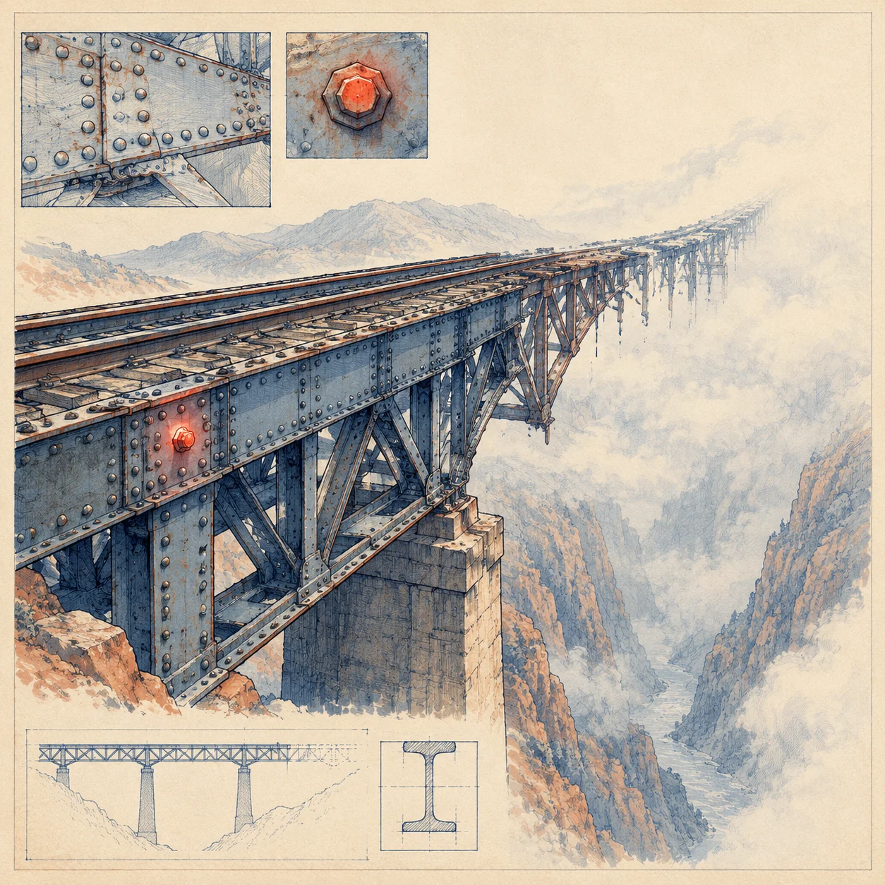
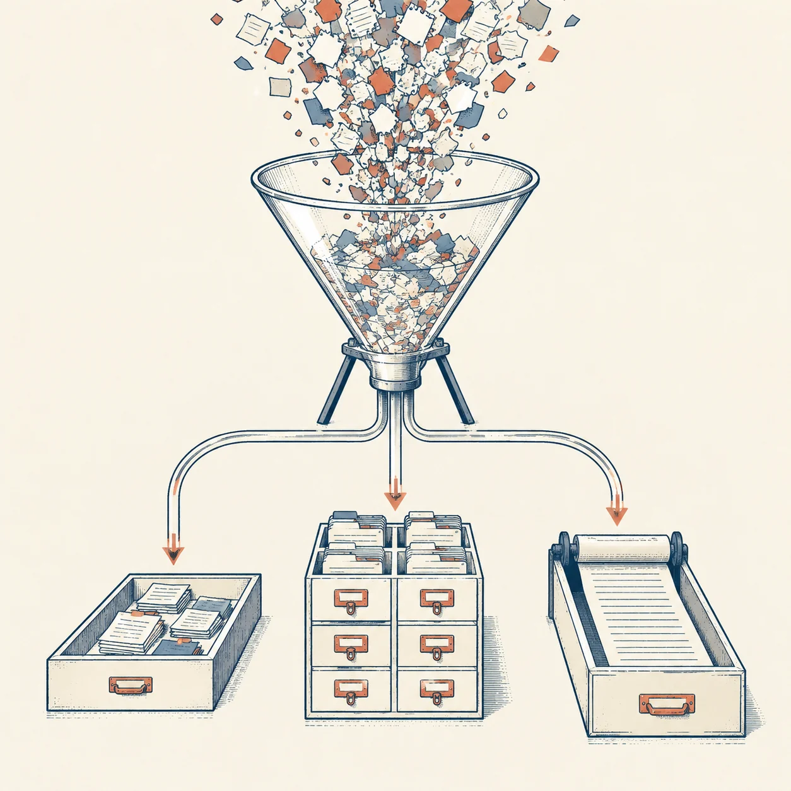
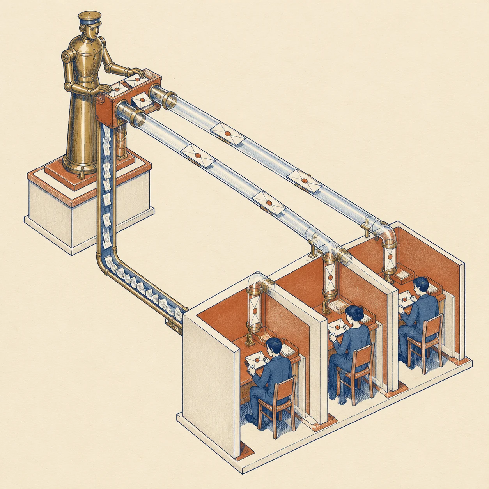

先说一句得罪人的话：你在教程里看到的 Agent，几乎都不是 Agent，而是一个带工具调用的聊天循环。它能在演示里帮你订机票，是因为演示只跑一次；它在生产里活不过一周，是因为生产要跑一万次。
这中间的差距不是「模型不够强」。过去两年模型强了十倍，而绝大多数 Agent 项目的失败原因没有变过：不可控、不可复现、不可归因。这三件事都不归模型管，归运行时管。
所以这篇文章不聊提示词技巧，也不聊框架选型。我们只做一件事：把一台 Agent 的内核拆到零件级，看每个零件为什么长这样。读完你应该能自己写一个不到两千行、但敢让它碰生产文件的内核。
全文约 13000 字 · 6 章 · 3 枚可交互小样 · 代码为 TypeScript 伪代码，刻意省略了框架细节 · 文中数据来自本地实测与公开基准，标注在文末
CONTROL FLOW
控制流的幻觉：谁在开这辆车
ReAct 不是一个架构，是一个建议。当你把它当成架构来用，你就把调度权交给了一个每次都会重新读一遍需求文档的司机。
造物手记 · 01 / 06先说一个我自己的事故。去年冬天，我写了一个巡检 Agent，任务很朴素：连上五台机器，检查磁盘、内存、容器状态，生成一份日报。本地跑 demo 时它二十秒交卷，漂亮得像模像样。放到定时任务里跑了三天，第三天早上它交上来的报告里，五台机器全是「正常」——而其中一台的磁盘已经 98%。
我翻日志，看到了那个熟悉的形状：ssh_exec 调用返回被截断了。模型以为命令失败，于是重试；重试又被截断；它第三次换了条命令，还是截断。第十一步，它决定「跳过这台机器」，因为「多次尝试均失败」；第十二步，它把跳过写进了「正常」的汇总里。整条链路里，没有任何一个环节是愚蠢的，每一个环节都很合理。合理的局部决策，堆出了一个荒谬的全局结果——这就是自循环 Agent 的默认命运。
1.1那个循环到底缺了什么
几乎所有教程都从这张图开始：
while (true) {
const res = await model.call({ messages, tools });
if (res.tool_calls.length === 0) return res.content; // 它说完了
for (const call of res.tool_calls) {
messages.push(await runTool(call)); // 它做了
}
}这十四行代码里有三个致命缺陷，而且它们互相掩护，让你在 demo 阶段永远发现不了：
- 没有终止性证明。唯一的退出条件是「模型不再调用工具」。这句话的逆否命题是：只要它一直调用，你就会一直转。工具失败、返回为空、参数不合法——没有任何一种情况能让循环自己停下来。
- 没有状态不变量。消息数组只增不减，它是「发生过什么」的记录，而不是「现在处于什么状态」的表示。两者的区别是：前者需要模型重新推理才能得到后者，而每一次重新推理都可能得出不同结论。
- 没有责任边界。决定「下一步做什么」的是模型，决定「什么时候停」的也是模型。一个系统里，被监督者同时是监督者，这不是自治，这是无人驾驶。
1.2控制反转：内核开车，模型看路
真正跑得住的 Agent，都有一个反直觉的结构：循环由内核持有，模型只被允许在某个特定的槽位里填一个值。这个思路在系统编程里一点都不新鲜，它叫控制反转（Inversion of Control）——你不要把调度权交给被调度的东西。
具体到 Agent，就是把「下一步做什么」这个开放问题，改写成「在当前状态下，从这几个合法动作里选一个」这个封闭问题。前者是无穷解空间，后者是一个枚举。
注意右边这张图里，模型并没有被削弱。它仍然要理解任务、生成参数、解释结果、提出修复方案——这些恰恰是它不可替代的地方。它只是不再被允许决定「现在该处于哪个阶段」。把创造性留给模型，把状态纪律留给代码，这是所有可靠 Agent 的共同骨架。
1.3确定性的三个档位
控制流的确定性不是二元的，它是一个渐变。按我的经验，可以粗分成三档，每一档对应一种任务形态：
| 档位 | 结构 | 模型负责 | 适用 | 失效方式 |
|---|---|---|---|---|
| L0 | 自由 ReAct 循环 | 规划 + 选工具 + 判断结束 | 一次性探索、演示、开放问答 | 死循环、目标漂移、预算耗尽 |
| L1 | 阶段化状态机，阶段内 ReAct | 阶段内选动作、填参数 | 绝大多数业务 Agent：巡检、写作、修 bug | 阶段边界判断错、修复循环 |
| L2 | 完全编排 DAG，节点是确定函数 | 分类、抽取、生成、打分 | 高合规、可审计、批量处理 | 遇到分布外输入时静默错配 |
大多数团队的误区是：以为自己在 L1，其实写的是 L0；或者反过来，明明任务需要一点判断力，却把它压成了 L2，结果每个没见过的输入都要改一次代码。选择档位的判据只有一句话：这一步错了，系统能不能自己发现？能发现，就允许模型自由一点；发现不了，就必须用结构把它锁死。
1.4混合执行模型：确定性骨架 + 概率节点
下面是这套内核的骨架。它是伪代码，但每一行的位置都是被事故打磨出来的：
type Phase = "survey" | "plan" | "act" | "verify" | "repair" | "done" | "halt";
interface TaskState {
phase: Phase;
goal: string; // 不可变，只读
plan: Step[] | null;
cursor: number;
findings: Finding[]; // 结构化事实，不是聊天记录
attempts: Map<string, number>; // 动作指纹 -> 次数
budget: { tokens: number; steps: number; deadline: number };
halt?: { reason: string; evidence: string[] };
}
async function tick(state: TaskState): Promise<TaskState> {
if (shouldHalt(state)) return { ...state, phase: "halt" }; // 预算是第一公民
switch (state.phase) {
case "survey": return { ...state, phase: "plan", findings: await probe(state) };
case "plan": return { ...state, phase: "act", plan: await plan(state) }; // 模型出计划
case "act": {
const step = state.plan[state.cursor];
const guard = checkPreconditions(step, state); // 确定性守卫
if (!guard.ok) return { ...state, phase: "repair", findings: [...state.findings, guard.block] };
const out = await execute(step, state); // 副作用在这里
return { ...state, phase: "verify", findings: [...state.findings, out] };
}
case "verify": {
const verdict = await verify(state); // 编译器 / 测试 / schema / 模型
if (verdict.ok) return advance(state);
return { ...state, phase: "repair", findings: [...state.findings, verdict.failure] };
}
case "repair": return repair(state); // 有上限的修复
default: return state;
}
}这段代码里有一个容易被忽略的细节：findings 是一个结构化数组，不是 messages。它记录的是「已知为真的事实」，比如「磁盘 /dev/sda1 使用率 98%」，而不是「模型说过什么」。下一章会讲为什么这个区分直接决定了长任务的生死。
1.5停手条件：把「停不下来」变成不可能
状态机解决了「往哪走」，还需要解决「什么时候必须停」。生产系统里，停手条件必须是内核自己的责任，而且至少有五道：
- 预算墙：token、步数、墙钟时间、工具调用次数，任意一项触顶即
halt。预算不是省钱用的，是防失控用的。 - 重复检测：对
(tool_name, 参数哈希)计数，同一指纹出现 3 次即判定为循环。注意要哈希参数而不是整个调用，因为模型会在参数里加点无关的装饰。 - 无进展检测：每轮对
findings取哈希，连续两轮不变即判定为原地打转。 - 验证连续失败：同一阶段连续 2 次验证不过，不再修复，直接升级给人的。
- 人类缺席条款：需要审批但拿不到人，超时后必须走「安全默认值」并留下待办，而不是假装成功。
最后一条最容易被忽略。我见过太多系统，在等待人工审批时无限挂起，最后被上游当成成功。停不下来和假装成功，是同一种病的两种症状。
1.6阶段粒度：七个阶段还是七十个
状态机设计里最常见的两个错误，正好相反：阶段划得太粗，等于没划；划得太细，等于把代码写进了配置。
我把判据定成这样：一个阶段，对应一种「失败之后需要不同处理」的处境。这句话有点绕，举个例子就清楚了。巡检任务里，「读取磁盘」和「读取内存」失败了，处理方式完全一样（重试一次，失败就标记 unverified），所以它们不该是两个阶段，而应该是同一个 probe 阶段的两个步骤。反过来，「写文件」和「跑测试」失败了，处理方式完全不同（前者回滚，后者改代码），所以它们必须是两个阶段。
按这条判据，一个中等任务的阶段数通常在 4 到 8 个之间。超过 12 个，你要么在描述一个大型流水线（那该用 DAG 而不是状态机），要么在把每个函数都包装成阶段（那是过度设计）。
| 现象 | 说明什么 | 改法 |
|---|---|---|
| 两个阶段之间反复横跳 | 它们其实是一个阶段的两种入口 | 合并，用子类型区分 |
| 某个阶段里出现了 switch | 阶段内部还有一层状态 | 拆成独立阶段，或承认这是子状态机 |
| 阶段数超过 12 个 | 你在写流程图，不是在写状态机 | 抽成 DAG 编排，或按领域分层 |
| 有阶段从不被别人跳入 | 可能是死代码 | 删掉，或者补上触发条件 |
还有一个必须说的话：状态机本身也是要测的。你可以不 mock 模型，但必须测迁移表——给定一个状态和一个动作，下一个状态是否唯一。这类测试是纯函数的，跑一千次零成本，能抓住绝大多数「某个分支永远走不到」的低级错误。
RELIABILITY
0.95 的十次方：可靠性断崖
单步 95% 听起来很稳。十步之后是 59.8%，二十步之后是 35.8%。工程不是靠祈祷跨过这道算术的。
造物手记 · 02 / 06每个做 Agent 的人都算过一次这个乘法，但很少有人真的相信它。因为第一次算出来的时候，你会在心里给它找补：我的每步不止 95%；失败可以重试；模型没那么笨。这三句辩解，第一句是乐观，第二句是幻觉，第三句是转移话题。我们先把它算干净。
2.1不存在「平均的单步成功率」
把任务看成一条链，端到端成功率 P = p₁ × p₂ × … × pₙ。如果每步都是 0.95：
| 步数 | 5 | 10 | 15 | 20 | 30 | 50 |
|---|---|---|---|---|---|---|
| 0.95n | 77.4% | 59.9% | 46.3% | 35.8% | 21.5% | 7.7% |
| 0.99n | 95.1% | 90.4% | 86.0% | 81.8% | 74.0% | 60.5% |
这张表最反直觉的地方不是数字本身，而是它的斜率：从 0.95 提到 0.99，五十步任务的成功率从 7.7% 涨到 60.5%——八倍。单步可靠性的边际收益在高步数下是复利的。反过来，任何让单步可靠性掉 2 个点的「优化」，都可能让长任务直接归零。
但真实世界比这个乘法更糟，因为独立性假设不成立。第 5 步读错了一个文件，第 6 步基于这个错误做判断，第 7 步又基于第 6 步的判断写文件——错误不会停在原地，它会写进状态。所以真实的衰减曲线通常比 pⁿ 更陡，而且在某个点之后是断崖而不是斜坡：一旦污染进入持久状态，后面的验证器也在验证一个错误的世界。

2.2三道防线，而不是一次重试
大多数「可靠性设计」只有一个动作：失败重试。这是最弱的一道防线，因为它假设失败是瞬时的（网络抖动、限流），而 Agent 的失败大部分是语义的（选错工具、参数错、理解错），重试一百次也还是错的——更糟的是，每次重试都把新的错误信息塞进上下文，让下一次更容易错。
真正有效的防线有三道，按成本从低到高：
第一道：前置守卫（Guard）
在动作执行之前，用确定性代码检查前提。文件存在吗？schema 合法吗？预算够吗？这个工具在当前阶段被允许吗？守卫的价值在于它把「模型犯错」挡在了副作用发生之前。一个 20 行的 checkPreconditions，能消掉我系统里大约三分之一的事故。
第二道：后置验证（Oracle）
动作执行之后，用一个不依赖模型的检查器判断结果对不对。oracle 分三层，越往下越贵但越可信：
- 语法层：JSON 能否解析、HTML 能否闭合、TypeScript 能否编译、diff 是否只碰了允许的文件。毫秒级，免费。
- 语义层：单元测试、lint、schema 校验、引用完整性检查。秒级，便宜。
- 事实层：跑起来看行为、对比外部数据源、让另一个模型当评审。分钟级，贵，但能抓到前两层漏掉的错。
第三层听起来像「用模型验证模型」的循环论证，其实不是：评审者的任务比执行者窄得多。让模型「写一个正确的函数」很难，让它「判断这个函数是否满足这三条断言」容易得多。窄任务的准确率天然更高，这就是裁判比运动员可靠的原因。
第三道：补偿与回滚（Compensation）
副作用一旦发生，验证就晚了。所以写操作必须可撤销：先写临时文件再原子重命名、先建草稿再发布、数据库操作用事务、外部调用用幂等键。做不到可撤销的，就必须人审。这条没有捷径。
SAMPLE 01 / RELIABILITY CLIFF
把步数和单步成功率推到极端，看任务在哪一步死
端到端：裸奔 59.9% · 防线 98.1%。点「跑一次」看这次死在第几步。
上图的模型刻意做得很简单，你可以自己核：防御链的单步有效率按 1 − (1−p)(1−v·r) 估，其中验证覆盖率 v = 0.9、修复成功率 r = 0.7。这两个数字不是拍脑袋——它们来自我系统里三个月的修复日志，不达标就退回重做。把假设写在明面上，比把成功率吹到 99.9% 有用得多。
2.3重试的三个层级，别用第一层解决第三层的问题
失败不是一个东西。至少分三类，对应三种完全不同的处理：
| 失败类型 | 例子 | 正确动作 | 重试有用吗 |
|---|---|---|---|
| 瞬时 | 429、连接重置、超时 | 指数退避 + 抖动，同参数重试 | 有用，但要有上限 |
| 参数 | 路径写错、schema 少字段 | 把结构化错误喂回去，改参数重试 | 有用，但只给一次 |
| 语义 | 选错工具、误解目标 | 退回上一阶段重新规划，或换策略 | 没用，越试越糟 |
区分它们不靠模型，靠内核的分类器：错误码、异常类型、返回值结构。我的做法是让每个工具声明自己的错误分类，内核只做路由。这比让模型「判断这次失败要不要重试」可靠一个数量级——因为模型看不到错误码，它只看到一段自然语言。
async function withPolicy<T>(op: Op<T>, state: TaskState): Promise<T> {
for (let attempt = 0; attempt < op.maxAttempts; attempt++) {
try { return await op.run(); }
catch (e) {
const kind = classify(e); // transient | param | semantic
if (kind === "semantic") throw escalate(e, "replan");
if (kind === "param" && attempt > 0) throw escalate(e, "replan");
await sleep(backoff(attempt) + Math.random() * 250); // 抖动防同步风暴
}
}
throw escalate(new Error("attempts_exhausted"), "human");
}还有一个细节值得单独说：重试预算必须共享。如果每个工具都有自己的 3 次重试，一个 10 步任务在最坏情况下会变成 30 次调用，而上下文里会堆 30 段错误信息。正确做法是内核持有一个全局重试预算，任何一步消耗它，用完即停。局部最优在这里会直接杀死全局。
2.4把「不知道」变成一等公民
可靠性设计里最被低估的一件事，是允许系统说「我不知道」。二值化的 Agent 只有成功和失败，于是它会把不确定的结果硬掰成成功——这正是开头那个巡检故事的真正病灶。三值逻辑救不了所有问题，但它能救这一半：
verified：有 oracle 通过，可以继续。unverified：执行成功了，但没有独立证据。允许继续，但结果必须标记，且不能作为后续决策的唯一依据。contradicted：有证据表明失败。必须修复或升级。
我的日报系统后来改成：任何 unverified 的检查项，在报告里单独列一节「未能确认」，并附上原始输出。上线之后，它再也没有「全部正常」过——因为它终于被允许说「这台机器我没连上」。
CONTEXT
上下文的熵：为什么记得越多，错得越离谱
窗口从 8K 涨到 1M，事故率没有下降。因为问题从来不是装不下，而是装进去之后，模型不知道该看哪。
造物手记 · 03 / 062023 年大家说「上下文太短，长任务做不了」。2025 年窗口管够了，长任务依然做不了。这时候解释变成了「模型注意力不行」。这个解释不算错，但它没有操作性——你没法改模型，你只能改你塞进去的东西。上下文工程的本质，不是搬运信息，是管理信噪比。
3.1三个机制，三种失败
关于长上下文的论文很多，真正对工程有指导意义的是三个结论。我把它们翻译成你会遇到的症状：
| 机制 | 论文里的说法 | 你看到的症状 | 工程对策 |
|---|---|---|---|
| 中间遗忘 | Lost in the Middle：信息位置呈 U 形，首尾强、中间弱 | 它在第 3 轮看过的那条约束，第 15 轮完全忘了 | 关键约束放首尾；每轮重述目标；用结构化状态而非历史 |
| 注意力汇 | Attention Sinks：模型把注意力堆在开头几个 token 上 | 删掉开头的系统提示，行为立刻变差，哪怕后面还留着摘要 | 固定前缀别动；把稳定内容放前面，利用前缀缓存 |
| 干扰效应 | 无关上下文降低检索与推理准确率，且随长度加剧 | 工具输出里 90% 的日志没用，但它污染了判断 | 工具返回值裁剪；无关历史移出上下文 |
注意第三条：它说的不是「长上下文不好」，而是「无关内容有害」。这两者差别巨大。一个 100K 的高密度上下文，可能比一个 30K 的垃圾场更好用。所以「省 token」不是目的，「提高密度」才是。

3.2四级存储：把记忆从对话里救出来
所有把状态存在 messages 里的 Agent，最终都会遇到同一个问题：它必须从一段不断变长的流水账里，重新推理出「我现在知道什么」。这件事人做都费劲，模型做更是每次结果不同。
解法是把记忆分层。下面这四级，是我在四套系统里收敛出来的结构，几乎可以照抄：
这个结构最重要的性质是可重建：给定 journal，你可以重新装配出任何一轮的上下文。于是「它当时为什么这么想」变成一个可以复盘的问题，而不是玄学。
3.3预算怎么分：一张施工图
假设窗口 128K，输出预留 8K，可用 120K。我的默认分配如下，你可以按任务调整，但每一项的存在比数字更重要：
| 区域 | 占比 | 内容 | 超了怎么办 |
|---|---|---|---|
| 固定前缀 | 8% | 系统提示 + 角色 + 硬约束 | 不许超。超了说明提示词该重构 |
| 工具定义 | 12% | 工具 schema | 削减工具数量，不是削减描述 |
| 当前任务 | 10% | 目标、验收标准、当前步骤 | 不许超 |
| 工作集 | 25% | 相关文件片段、上一步输出 | 检索替换，不做全量 |
| 历史与便签 | 30% | 压缩后的进展、失败记录 | 先压缩，再丢最早的低价值项 |
| 输出预留 | 15% | 模型生成本轮回答 | 不许动 |
这张表真正的作用不是分配，而是让你在装配上下文时必须做减法。没有预算约束的装配器，最后一定会变成「全都塞进去」；有了预算，你才会被迫回答「这一段到底值不值它的 token」。
SAMPLE 02 / CONTEXT DECAY
拖到第 15 轮，看上下文怎么从「资料」变成「垃圾场」
装配策略：每 3 轮把历史压成结构化便签，工具输出只保留结论与证据指针。
小样里的数字是模型，不是实测：一轮工具调用的原始返回按 1100 token 记，其中真正有用的结论大约 120 token。这个比例（约 1:9）在我见过的系统里相当普遍——日志、JSON、HTML、测试输出，都是这个量级。也就是说，不做裁剪的话，你 90% 的上下文预算在买噪声。
3.4压缩的三种做法，和它们各自的坑
- 丢尾：只保留最近 N 轮。最快，也最危险——它会把「第 2 轮发现的关键约束」扔掉，而模型不知道自己不知道。
- 摘要：让模型把历史压成一段话。可行，但摘要会丢细节，而且每次摘要都是一次有损再编码，压三轮之后基本只剩套话。我的做法是只压过程、不压事实：事实进 L2，过程进摘要。
- 检索：把历史切块存起来，按当前步骤检索。质量取决于切块与索引，工程量大，但在超长任务里是唯一能 scale 的做法。
还有一个几乎没人提但极其有效的技巧：让模型自己维护便签。在每轮结束时要求它输出一个固定 schema 的 scratch 块（已知事实、待办、已排除的假设），内核把它结构化存起来，下一轮重新注入。这相当于把「记忆」从隐式的注意力，变成显式的数据结构——模型不需要「记得」，它只需要「读」。
3.5反直觉结论：稳定比大更重要
如果你的上下文每轮都在变，前缀缓存全部失效，成本翻倍，延迟翻倍，而且模型面对的是一个每次都不同的世界。反过来，把系统提示、工具定义、输出格式固定住，只让「工作集」变化，你会发现两件事：成本降了，行为也稳了。
原因不难理解：模型的行为由它看到的模式决定。一个稳定的前缀是一个稳定的模式，一个每轮重排的上下文是一个每轮都要重新适应的环境。前者像给员工一份固定的岗位说明书，后者像每天早上换一个老板。
3.6装配器：一段可以照抄的骨架
说了这么多原则，落地就是几十行代码。装配器是内核里唯一「每次都要跑」的模块，它决定了模型这一轮看到的世界。我把它写成四步：定清单、排序、装填、收尾。
function assemble(state: TaskState, budget: number): Message[] {
// 1. 定清单：这一轮到底需要哪些信息？
const wanted: Segment[] = [
{ k: "system", v: SYSTEM_PROMPT, pin: true },
{ k: "tools", v: toolsFor(state.phase), pin: true },
{ k: "goal", v: state.goal, pin: true },
{ k: "plan", v: currentStep(state), pin: true },
{ k: "facts", v: factsCitedBy(state.phase), pin: false },
{ k: "scratch", v: state.scratch, pin: false },
{ k: "work", v: workingSet(state, budget * 0.25), pin: false },
{ k: "history", v: state.compressedHistory, pin: false }
];
// 2. 排序：pin 在前（命中前缀缓存），其余按信息密度降序
const ordered = [
...wanted.filter(s => s.pin),
...wanted.filter(s => !s.pin).sort((a, b) => density(b) - density(a))
];
// 3. 装填：从高密度到低密度，装不下就丢；pin 装不下直接报错
let used = 0;
const kept: Segment[] = [];
for (const s of ordered) {
const cost = tokens(s.v);
if (used + cost > budget) {
if (s.pin) throw new Error(`pinned segment ${s.k} exceeds budget`);
continue; // 丢掉，但记一笔
}
kept.push(s); used += cost;
}
// 4. 收尾：把被丢掉的东西写进日志，这是复盘时最有用的信息
journalDropped(state, ordered.filter(s => !kept.includes(s)));
return render(kept);
}这段代码里有两个设计决定，值得单独说：
- pin 与排序分离：pin 的东西不仅不能被丢，还要放在最前面。这不是为了好看，是为了让前缀缓存命中——前缀缓存只认完全相同的前缀，哪怕你在开头插入一个空格，缓存就废了。
- 记录「丢了什么」：这一步看起来多余，但它是排障的关键。当模型莫名其妙忽略某条约束时，你打开日志就能看到：那条约束这一轮根本没进上下文。没有这个记录，你会花两小时怀疑模型，最后发现是自己的装配器。
density() 怎么算？我的做法很土：(新信息量 × 引用次数) / token 数。新信息量用「与已有事实的重叠度」近似，重叠度高就低。这个方法不精确，但它逼你把「这一段到底值多少」变成一个问题——而大多数装配器连这个问题都不问。
TOOL SEMANTICS
工具即界面：五十个 API 不如一把螺丝刀
工具不是能力清单，是模型和世界之间的那层用户界面。界面设计得好，笨模型也能干活；设计得烂，再强的模型也会点错按钮。
造物手记 · 04 / 06先说一个数字。一个中等复杂度的工具定义，名字、描述、参数 schema、枚举值、示例，加起来大约 200 到 400 token。五十个工具，就是 1 万到 2 万 token 的常驻开销——每一轮都要付，哪怕这一轮只用了一个。这还只是钱的问题。
更贵的是认知成本。工具越多，描述之间的语义重叠越多，模型选错的概率越高。你会发现它开始调用 search_files 去读一个已知路径，或者用 run_command 去做一件 edit_file 该做的事。这不是模型变笨了，是你给它做了一份有五十个相似按钮的控制面板。
4.1正交，而不是齐全
2024 年之后，几个最强的编码 Agent 陆续收敛到了同一个极简工具集：读文件、写文件、改文件、跑命令。四个工具，覆盖了绝大部分编程任务。这件事值得琢磨：为什么不是五十个专用工具更准？
因为组合爆炸由语言能力承担，比由 API 数量承担便宜得多。「找出所有引用了旧接口的文件，批量替换，然后跑测试」——用四个原子工具，模型用一句话就能编排；如果用五十个专用工具，你得先有 find_references、batch_replace、run_tests、parse_test_output……每一个都要定义、要维护、要占用上下文，而且它们之间的组合仍然要模型来想。
当然，正交不是万能药。当某个操作高频、复杂、且错误代价极高时，专用工具是对的。比如「部署」：你用 bash 拼十条命令也能做，但一旦拼错就是生产事故，这时候一个带前置检查、带回滚、带审计的 deploy 工具，比给模型自由发挥好一万倍。正交负责覆盖长尾，专用负责守住要害。
4.2返回值是给模型的 UI
这一节是我认为整篇文章最容易被低估的部分。绝大多数人设计工具时，只关心「输入怎么传」，不关心「输出怎么给」。但模型看到的世界，就是工具返回的那段文本。你返回什么，它就以为什么。
看两个版本的同一次失败：
npm ERR! code ELIFECYCLE
npm ERR! errno 1
npm ERR! app@1.4.2 test: `jest --ci`
npm ERR! Exit status 1
npm ERR!
npm ERR! Failed at the app@1.4.2 test script.
... (此处省略 180 行 stack trace) ...
FAIL src/utils/parse.test.ts
● parseDuration › handles negative input
expect(received).toBe(expected)
Expected: -1000
Received: 1000{
"status": "failed",
"summary": "1 test failed: parseDuration rejects negative input",
"failure": {
"file": "src/utils/parse.test.ts",
"case": "handles negative input",
"expected": -1000, "received": 1000
},
"evidence": "artifacts/test-2026-10-20.log:412-438",
"next": "parseDuration 未处理负号；检查 src/utils/parse.ts:22"
}第二个版本的信息量并没有减少——完整日志还在 evidence 指向的文件里，模型需要时可以再读。但它把「读 180 行才能得到的结论」变成了「一行就能拿到的结论」。这一个改动，在我系统里把测试修复的平均轮次从 4.2 降到了 1.9。
设计返回值时，我遵守三条规则：
- 结论先行：第一个字段永远是状态或结论，不是细节。
- 证据可寻址：细节不删，但变成指针（文件 + 行号、URL、记录 ID）。模型有手，让它自己去拿。
- 给下一步：
next字段不是命令，是提示。它显著降低模型在失败后乱试的概率。
4.3错误信息是产品文案
「Error: ENOENT」对人是噪音，对模型是谜语。它不知道是哪个文件、为什么找不到、有哪些替代。于是它开始猜，猜错，再猜。
一个好的工具错误应该包含四件事：发生了什么、为什么、有哪些合法选项、建议怎么做。比如：
// 差
Error: file not found
// 好
{
"status": "error",
"code": "FILE_NOT_FOUND",
"message": "src/config.ts 不存在",
"candidates": ["src/config/index.ts", "src/config.default.ts"],
"hint": "路径可能缺少 /index；或先调用 list_dir('src') 确认结构",
"retryable": true
}candidates 这个字段尤其值钱。它把「猜」变成了「选」，而选择的准确率远高于凭空生成。这本质上是在给模型做受限补全——和 IDE 的自动补全是同一个思路。
4.4可反悔性：写操作要分三级
读操作可以放开，写操作必须分级。我的默认分级是：
| 级别 | 范围 | 约束 | 审批 |
|---|---|---|---|
| 沙盒写 | 临时目录、草稿区 | 随便写，可整体丢弃 | 不需要 |
| 工作区写 | 项目文件 | 先 diff 后落盘；保留原文件；可一键还原 | 不需要（但全部留痕） |
| 不可逆操作 | 发版、删数据、对外发送、花钱 | 幂等键 + 前置快照 + 二次确认 | 必须人审 |
关键不是「限制模型」，而是让错误变得便宜。一个可以一键还原的系统，允许模型大胆试错；一个删了就没的系统，你只能把它关进笼子。可反悔性直接决定了你能给 Agent 多少自由度。
sideEffect: "none" | "local" | "external"、idempotent: boolean、cost: "free" | "metered"。内核据此决定重试策略与审批级别——而不是让模型在提示词里「注意不要重复发送」。
4.5一个工具定义应该长什么样
把所有东西合起来，一个生产级工具定义大致是下面这样。注意它比 OpenAI 的 function schema 多了四个字段，而这四个字段恰恰是可靠性的来源：
interface ToolSpec<I, O> {
name: string;
description: string; // 写「什么时候该用」，不是「它做什么」
input: Schema<I>;
output: Schema<O>;
sideEffect: "none" | "local" | "external";
idempotent: boolean;
timeoutMs: number;
// 内核侧：不需要模型知道，但决定了它能不能被安全地重试
preconditions(state: TaskState): GuardResult;
classify(err: unknown): "transient" | "param" | "semantic";
trim(raw: unknown): { summary: string; evidence: string; next?: string };
}那个 description 的写法值得单独强调。大多数人写「读取文件内容」，这描述的是功能；应该写「当你知道确切路径、需要查看内容时使用；路径不确定时先用 list_dir」。工具描述不是文档，是决策依据。它要回答的不是「这是什么」，而是「什么时候该选我、什么时候别选我」。
4.6并行、批处理与「一次调用做一件事」的例外
正交工具的一个副作用是：一次任务往往需要连续调用很多次。读十个文件、改五处、跑三次测试。如果每次都单独一轮，你的墙钟时间会变成「轮数 × 单轮延迟」，而单轮延迟通常是 3 到 20 秒。十个文件就是三分钟，只为了读。
所以有两个必要的例外：
- 并行只读：同一阶段内的读操作可以并发发出，结果按调用 ID 回收。注意只对
sideEffect: "none"的工具开这个口子——并发写会让重放和回滚都失去意义。 - 批处理原语：与其给模型十个专用工具，不如给一个接受数组的原子工具。
read_file(paths: string[])比read_file× 10 好，理由和前面一样：一个 schema 覆盖无量组合。
但批处理有个陷阱：部分失败怎么办。十个文件里三个不存在，是整体失败还是部分成功？我的默认是「部分成功 + 结构化报告」：成功的照常返回，失败的列在 errors 里，每条带 candidates。让模型自己决定要不要补那三个，而不是让它重试整个批次——后者会把已经读到的九个文件重新读一遍，浪费九倍的上下文。
TOPOLOGY
多智能体的迷思：群聊不是架构
把五个 Agent 拉进一个群，它们会热烈讨论、互相赞同、最后集体跑偏——而且在账单上留下一条漂亮的指数曲线。
造物手记 · 05 / 062023 年最流行的 Agent 演示，是一群各有头衔的模型坐在一张桌子旁开会。产品经理提需求，架构师画图，程序员写码，测试员挑错，最后交付。看的时候觉得很科幻，自己搭一遍会发现：它们大部分时间在互相复述，很少在解决问题。
这不是 prompt 没写好。这是一个信息论问题。
5.1群聊的三个数学问题
假设 N 个 Agent，每轮每个 Agent 都能看到所有人的发言。第 r 轮结束时，群里累计消息量大致是 O(N² · r)，而每个 Agent 要读的上下文是 O(N · r)。N=5、r=4 时，总消息 80 条，每个 Agent 每轮要读 20 条别人的推理过程——其中大部分与它的任务无关。
三个后果依次发生：
- 成本爆炸：token 消耗随 N² 增长，而有效信息量增长得慢得多。你付的是平方的钱，买的是线性的进展。
- 上下文互相污染：测试员看到程序员的「我觉得这样应该没问题」，会倾向于放过问题；程序员看到产品经理的「先跑通再说」，会降低实现标准。每个 Agent 的上下文里都混进了别人的假设，而这些假设没有被标记为「未经验证」。
- 责任不可归因：出了问题，你无法回答「是谁在第五轮决定了这个方案」。因为没有一个人决定，是「大家讨论出来的」。这在工程上是灾难，因为它让复盘和修复都失去对象。
5.2两种真正有效的拓扑
如果你确实需要多个执行者（下一节讲什么时候需要），只有两种结构经得起生产考验：
A 是层级：主管拆任务、派活、汇总。B 是扇出：把一个任务复制成 N 份独立的子任务，并行跑，最后合并。前者适合有依赖的任务，后者适合可切分的任务（审 40 个文件、查 10 个数据源、写 8 个章节）。

两者都不允许 worker 之间自由对话。这不是为了省钱，是为了保持每个 worker 的上下文干净——而这恰恰是多 Agent 唯一真正的技术优势。
5.3什么时候真的需要多 Agent
我的判断标准只有三条，满足任意一条才考虑拆：
- 上下文隔离：子任务的上下文会污染主任务（比如审一份 3000 行代码，不需要把它塞进主线程）。
- 并行收益：子任务之间无依赖，墙钟时间能真的缩短。
- 权限分离：子任务需要不同的工具权限（比如只读的审查者、可写的执行者），靠结构而不是提示词隔离。
三条都不满足的多 Agent 设计，基本都是在给单 Agent 增加通信开销。我见过最奢侈的浪费，是一个三人小组：研究员查资料、写手写文章、编辑润色——而三个人的上下文里都有同一份资料，因为研究员把原文贴进了消息里。
5.4类型化委托：子任务是一份契约
「你去帮我看看这个模块有没有问题」是自然语言，不是委托。委托应该是一份带类型、带预算、带验收标准的合同：
interface Delegation<I, O> {
role: "reviewer" | "writer" | "researcher";
input: I; // 结构化入参，不是一段话
outputSchema: Schema<O>; // 子 Agent 必须按这个形状回
tools: string[]; // 白名单，不是全集
budget: { tokens: number; wallMs: number };
acceptance: Assertion[]; // 主 Agent 用它验收，而不是靠读作文
onFail: "retry" | "skip" | "escalate";
}
const task: Delegation<ReviewInput, ReviewOutput> = {
role: "reviewer",
input: { files: changedFiles, focus: ["null-safety", "error-handling"] }, // 只给这些，不给整个仓库
outputSchema: ReviewOutput, // { findings: [{file, line, severity, evidence}], verdict }
tools: ["read_file", "grep"], // 只读，物理上无法改代码
budget: { tokens: 60_000, wallMs: 180_000 },
acceptance: [eachFindingHasEvidence, verdictIsBinary],
onFail: "escalate"
};这份契约里有三个设计值得说：
- outputSchema 是硬约束：子 Agent 的自然语言推理留在它自己的上下文里，主 Agent 只收到结构化结论。这是「上下文隔离」真正的落地方式——不是换个进程，而是换一种数据形状。
- tools 是白名单：审查者的物理权限里没有写操作，它就不可能「顺手把问题改了」。权限靠结构，不靠嘱咐。
- acceptance 是断言：主 Agent 不读子 Agent 的作文来判断好坏，而是跑断言。这让「子 Agent 撒谎」变成一个可以被抓住的问题。
5.5预算继承与级联取消
多 Agent 系统最容易被忽略的工程细节是生命周期。三个必须做对：
- 预算继承：子 Agent 的预算必须从父预算里扣，不能各算各的。否则五个 worker 各花 6 万 token，主任务以为自己只花了 2 万。
- 级联取消：父任务被取消或超时，所有子任务必须立刻收到中止信号。Node 里的
AbortSignal、Python 里的asyncio.CancelledError——不管用什么，必须有。 - 失败传播策略：扇出的 N 个任务里失败一个，是整体失败、跳过、还是重试？这个决策必须写在拓扑定义里，而不是等运行时临场发挥。
SAMPLE 03 / TOPOLOGY SANDBOX
同一个任务，两种拓扑：看消息量与有效信息的比例
五名成员，任务：审查 40 个文件并给出结论。
小样是确定性模拟：群聊模式下每轮每人发言、每人读全场，消息数按 N(N−1) 增长；分层模式下主管只读结构化结果，worker 之间零通信。数字是模型，但增长阶数是真实的——你可以自己数一遍每一轮的读取次数。
DURABILITY
崩溃之后：执行日记与可重放调试
你的 Agent 跑到第 14 步，进程被 OOM 杀掉。第二天你重启它，它从第 1 步开始，把已经做过的副作用又做了一遍。
造物手记 · 06 / 06前面五章都在讲「怎么让它做对」。这一章讲「它挂了之后怎么办」——这是所有 Agent 文章都跳过、但所有生产系统都逃不掉的一章。
Agent 和普通程序最大的差别是：它的一次运行很贵（token、时间、外部副作用），而且它的中间状态很复杂（上下文、预算、计划、已确认的事实）。重新跑一遍不只是浪费时间，很可能做错事——比如把一封邮件发两次。
6.1把每一步当成一次事务
持久化的核心不是「保存状态」，而是让每一步都有明确的边界：进去之前有什么、出来之后变了什么、这一步的输入是什么、输出是什么。有了这个边界，你才能谈恢复。
interface Entry {
seq: number; // 单调递增，恢复时按它排序
phase: Phase;
action: { tool: string; args: unknown };
inputHash: string; // 参数 + 上下文摘要的哈希，用于去重
output: unknown;
verdict: "verified" | "unverified" | "contradicted";
tokens: number; ts: number;
}
async function runDurable(taskId: string, state: TaskState) {
const journal = await loadJournal(taskId);
if (journal.length) state = replay(state, journal); // 先恢复，再继续
while (state.phase !== "done" && state.phase !== "halt") {
const next = await tick(state);
if (next.lastAction) {
const key = hash(next.lastAction);
const seen = journal.find(e => e.inputHash === key);
if (seen) { // 重放时跳过已完成的副作用
state = apply(state, seen);
} else {
await append(taskId, next.lastEntry); // 先写日志，再执行
state = next;
}
} else state = next;
}
return state;
}这段代码里有个容易写反的顺序：先写日志，再执行。如果反过来，进程可能在「执行完」和「写日志」之间崩溃，恢复时你以为没做过，于是又做一遍。先写日志的代价是可能记录了一次没执行的动作；解决办法是日志里多一个 status: "planned" | "committed"，恢复时对 planned 的条目做幂等重放。
6.2重放调试：不花钱地把事故看一遍
只要日志里存了每次模型调用的输入和输出，你就可以做一件很奢侈的事：把整次运行按原样重放，不调用任何模型。上下文怎么装配的、第 9 步为什么选了那个工具、第 12 步的验证为什么放行——全部可以逐帧回看。
我在 cc-probe 里第一次做这件事的时候，发现了一个隐藏了三周的问题：模型在第 7 步拿到的工具列表，比它应该看到的少了两个——因为上下文装配器把「工具定义」和「工作集」放在同一个预算池里，工作集超了就把工具挤掉了。这种 bug 在实时日志里看不出来，只在重放里现形。
重放还有第二个用途：对照实验。同一份输入，换一个提示词、换一个模型、换一种压缩策略，重放一遍，看结果差异。这让提示词工程从「玄学调参」变成了「可以 A/B 的工程」。
6.3给概率系统写测试
「输出不可复现」是所有人不给 Agent 写测试的借口。但测试本来就不该断言输出等于某个字符串——那是最脆弱的测试。对 Agent，我们断言三件别的事：
| 测试类型 | 断言什么 | 例子 | 稳定性 |
|---|---|---|---|
| 终态断言 | 最终结果满足的约束 | 生成的 JSON 能通过 schema；文件存在且可编译 | 高 |
| 过程断言 | 必须发生 / 禁止发生的事件 | 写文件之前必须读过它；不得调用 send_email 两次 | 高 |
| 基准断言 | 一组固定输入上的通过率 | 30 个用例里至少 27 个通过；平均步数 ≤ 8 | 中（要看方差） |
第三类需要特别小心。跑一次通过不代表稳定，跑一次失败也不代表坏了。正确做法是固定随机种子跑 N 次，看分布：通过率、步数分布、token 分位数。我通常跑 20 次，关注的是最差的那次，而不是最好的那次。
还有一件更便宜的事：录一条黄金轨迹。把一次成功的运行（含所有模型输入输出）存成 fixture，之后每次改内核，都用它重放一遍，断言过程断言全部通过。这本质上是 Agent 的回归测试——不测「模型聪明不聪明」，只测「内核有没有把已经跑通的路弄坏」。
6.4内核能保证什么，不能保证什么
写到这里，必须说一句诚实的话，否则这篇文章就是在贩卖银弹：
- 内核能保证：不失控（预算、停手、循环检测）、可恢复（日志、重放）、可归因（每一步有输入有输出有验证）、错误不扩散（守卫、幂等、回滚）。
- 内核不能保证：正确性。一个逻辑上错误的计划，会稳定地、可恢复地、有日志地执行到底，然后交给你一个错误的结果。
正确性来自领域 oracle——编译器、测试、schema、业务规则、人类审查。内核的作用是让这些 oracle 有机会介入，并且在它们说不的时候，系统真的会停下来。这也是为什么我在第二章说验证覆盖率比模型能力更值得投资：内核提供通道，oracle 提供真相。
6.5一个不到两千行的内核，长什么样
把六章合起来，一个够用的 Agent 内核大致是这些模块。每个都不复杂，难的是它们必须同时存在：
| 模块 | 职责 | 关键约束 | 大约行数 |
|---|---|---|---|
state | 阶段、计划、发现、预算 | 不可变更新，可序列化 | 120 |
loop | tick、阶段迁移、停手 | 退出条件显式且有限 | 200 |
guard | 前置检查、权限、预算扣减 | 失败即阻断，不吞异常 | 150 |
oracle | 语法/语义/事实三层验证 | 返回三值，不返回布尔 | 250 |
context | 分级装配、压缩、裁剪 | 预算硬上限，稳定前缀 | 300 |
tools | 契约、副作用分级、返回值裁剪 | 白名单，错误结构化 | 400 |
journal | 追加、恢复、重放 | 先写后做，幂等键 | 200 |
eval | 断言、黄金轨迹、N 次运行 | 过程断言优先 | 250 |
加起来不到两千行。你会发现里面几乎没有「AI」——大部分是状态、预算、验证、日志。这就是我开头那句话的意思：Agent 的可靠性，主要不是 AI 问题，是系统问题。
CHECKLIST
结语：笼子不是牢房，是脚手架
把概率关进确定性的笼子，不是为了驯服模型，是为了让它的能力可以被安全地放大。
造物手记 · 终章写这篇文章的时候，我回头数了一下自己桌上那几套系统。它们的模型换过好几轮，提示词改过上百次，工具增删过几十个——但内核的骨架几乎没动过。状态机还是那个状态机，预算还是那个预算，日志还是那个日志。真正稳定的东西，从来不是聪明的那部分。
所以我不太相信「等模型再强一点，这些工程手段就不需要了」这种说法。模型越强，我们越会把更重要的任务交给它；任务越重要，失控的代价越大。能力和约束是同步增长的，这不是过渡期，这是常态。
如果这篇文章只能留下一句话，我希望是这句：不要问「怎么让 Agent 更聪明」，要问「它错了之后，系统会怎样」。前一个问题模型会替你回答，后一个问题只有你能回答。
附内核速查卡
下面这张卡可以打印出来贴在显示器边上。每一条都是一个问句，答不上来就说明那里有个洞。
01 · 控制流
- 循环的退出条件是显式的吗？
- 状态由谁持有——代码还是消息数组？
- 模型能决定「进入哪个阶段」吗？
- 预算耗尽时会发生什么？
02 · 可靠性
- 这一步做错了，谁能发现？
- 验证覆盖率大概是多少？
- 重试预算是全局的还是每步的？
- 副作用可撤销吗？
03 · 上下文
- 关键约束在第 15 轮还在吗？
- 工具返回裁剪过吗？
- 前缀稳定到能命中缓存吗？
- 事实存在哪里，能被断言吗？
04 · 工具
- 工具数量超过 20 了吗？
- 返回值有结论和证据指针吗？
- 错误信息给出候选了吗？
- 写操作分级了吗？
05 · 拓扑
- 子 Agent 之间能自由对话吗？
- 委托有 schema 和预算吗？
- 子任务的权限是白名单吗？
- 父任务取消时子任务会停吗？
06 · 持久化
- 进程被杀之后能续跑吗？
- 日志是在执行前写的吗？
- 能重放整次运行吗？
- 回归测试断言过程还是输出？
下一篇（如果有的话）我想写「评估」：怎么给一个概率系统建立真正有意义的分数，而不是在十几个玩具用例上刷到 100%。那是这套内核唯一还没有被讲透的部分。